|
Articles 
1 2 3 4
5 6 7
8 Next
National
Center for Khmer Ceramics Revival
The National Center for Khmer Ceramics Revival is aimed at the revival
of Cambodian ceramics. It is a non-profit and non-governmental organization
aiming to rediscover and reintroduce Khmer ancestral pottery techniques
and support the development of contemporary Khmer ceramic art.
World
Contemporary Public Ceramic Art
Zhang Yushan’s book World Contemporary Public Ceramic Art
addresses a very important aspect of world ceramic art hitherto not written
about in China - that of public sculpture. His work is encyclopaedic in
scope, spanning 30 countries on five continents.
 Rascal
Ware, Yunomis and the Law of Unintended Consequences Rascal
Ware, Yunomis and the Law of Unintended Consequences
This is the seventh chapter in a series of articles by Don Pilcher on
some of the characters that have been inspiring him and helping him with
creating his ceramic works. Please note: this article may be offensive
to some readers.
Rebuilding
Afghanistan Pot by Pot: The Potters of Istalif
A fascinating article on potters in Afghanistan, who are doing their bit
to rebuild their war-torn country. Istalif has long been known for its
traditional crafts. Its potters are getting back on their feet, with the
help of the Turquoise Mountain Foundation.
Abundant Beauty
New York based designer and artist Alice Simpson takes us on a journey
to the past when 'Fat Folk' were regular performers on the traveling carnival
circuit. Her coil built figurative sculptures are inspired by postcards
and other souvenirs from circus and carnival sideshows.
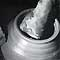The
Onggi Potters of Korea
Onggi are traditional Korean earthenware vessels, used for the storage
of pickled vegetables, bean pastes and soy sauces. Professor Emeritus
Ron du Bois, who spent 18 months in Korea on a Fulbright scholarship fills
us in on their meaning and method of production.
 Rascal
Ware in Canton Rascal
Ware in Canton
Chapter five in the Rascal Ware story. See what dubious activities
Georgette Ore & co have been up to. This time Rascal Ware is being
exhibited in Canton. That would be Canton, Ohio, USA, not Canton, China...
;-)
CEBIKO
The World Ceramic Exposition Foundation (WOCEF) initiated the World Ceramic
Biennale Korea (CEBIKO) in 2001. The 4th World Ceramics Biennale is now
in planning. Get your entries in quick - closing date is 6th October 2006.
City
of Carouge Prize 2007
The City of Carouge 2007 Prize will be awarded to the value of 10,000
Swiss francs (approximately 6300€). Other awards include the Bruckner
Foundation Prize for the Advancement of Ceramics and a prize awarded by
the Swiss Ceramics Association.
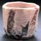Japanese
Ceramics Terminology
Morgan Pitelka, author of Handmade Culture: Raku Potters, Patrons and
Tea Practitioners in Japan and Japanese Tea Culture: Art, History,
and Practice, fills us in on the intricacies of Japanese Ceramics
Terminology.
Feat
of Clay
Uma Nair reports on Christie's Hong Kong's recent 'Imperial Sale', where
a magnificent early Ming underglaze copper-red vase, "yuhuchunping",
realized an astonishing HK$78,520,000 (US$10,207,600).
Paperclay
Practice in Pakistan
Head of the Ceramic Design Department at the National College of Arts
in Pakistan, Shazia Mirza, invited paperclay pioneer Graham Hay to spend
a month working with her staff and students at their Lahore campus.
Aberystwyth
Lifetime Achievement Awards
The International Ceramics Festival, Aberystwyth (Wales, UK) instigated
a Lifetime Achievement Award in 1999. Past winners include Ray Finch,
Mick Casson, Janet Mansfield, Warren McKenzie, David Leach and Janet &
Frank Hamer.
11th
National Ceramics Conference, Brisbane, Australia
The conference's theme is "Sustainability for the Individual and
the Collective". It aims to celebrate and debate contemporary ceramics
practice and to look at what can be done to ensure a sustainable future
for ceramics. Garth Clark will be delivering the keynote speech.
The
Rascal Ware Foot Fetish, by Georgette Ore
With their latest work, Don Pilcher, Georgette Ore, Mosely Bunkam and
Junior Bucks get to stepping on some people's toes - maybe your's? In
this article Pilcher tackles the seduction of the seashell - maybe a good
topic for a PhD?
 Andalucia's
New Golden Pottery Andalucia's
New Golden Pottery
Just a short drive north from the dazzling palaces and gardens of the
Alhambra in southern Spain, there is a small town called Jun, which has
a little palace of its own. Everyone knows About the Alhambra. Hardly
anybody has heard of Jun, even in Granada.
The
Clay Studio of Missoula
The Clay Studio of Missoula has established itself as a venue for a recognized
artist-in-residence program, an internship with the local university,
an internationally known exhibition space and many workshops and juried
shows. Coming up soon: International Cup and Potsketch.
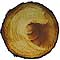
Elements
Indian art critic and curator Uma Nair discusses an exhibition showcasing
6 Indian and 12 international ceramic artists in Delhi. Included are Indian
studio potters Vineet Kacker, Jyotsna Bhat and Vinod daroz, Brazilian-born
British studio potter Marcio Mattos and Austrian raku artists Roland Summer
to name a few.
Oversized Clay Heads and their Moulds
Gilda Oliver, ceramic artist and teacher at Baltimore Clayworks, Maryland,
gives us an insight into her method for making large-scale clay heads
with the help of a two-piece plaster mold.
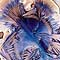Visible
Crystals
Large crystals grown in a glaze may look like flowers, lichens or three-dimensional
fans and feathers. Janet Hamer, co-author with Frank Hamer of The Potter’s
Dictionary of Materials and Techniques, outlines the new glazes of
Avril Farley and describes how these sculptural crystal shapes are formed.
Vitreous Vicissitudes, by Georgette Ore
Don Pilcher presents Chapter 4 in his satirical, but profound 'Rascal
Ware' series, in which he writes on the travails of studying ceramics,
how Rascal Ware wins an award, and introduces 'resident philosopher, Mosley
Bunkham'.
 Alternative
Glaze Materials Alternative
Glaze Materials
Ever tried cat litter, antacid, Alka-Seltzer, Calgon or cement as a glaze
colorant? No? US studio potter John Britt explains the use of alternative,
non-traditional, locally available materials in his remarkable new experimental
glazes. Recipes provided.
Potassium
Dichromate Toxicology
Occupational & Environmental Medicine M.D. Edouard Bastarache fills us
in on the toxicology of Potassium Dichromate, a colorant that should be
used with extreme caution. Article available in French and English.
Terra
Natura
Art critic and curator Uma Nair writes on the status of contemporary Indian
ceramics. Her exhibition in Delhi includes promienent Indian ceramists
P. Daroz, Kristine Michael, Vineet Kacker, Manisha Bhattacharya and Ela
Mukherjee.
International
Biennale of Contemporary Ceramics, Vallauris 2006
Vallauris, situauated near Cannes, has been a traditional French pottery
region since ancient times. The area flourished at the end of the 19th
century. Picasso worked with clay here from 1946–48. The town now
hosts one of the world's great international ceramics biennales.
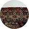The
Interstitial: The Dishes Are on the Floor (And Up the Wall)
New York artist, poet, curator and art critic John Perreault discusses
how Marek Cecula is taking the tradition of the industrial ceramic decal
one step further. Cecula was born in Poland and lived in Israel and Brazil,
before settling in New York. He has since established a strong reputation
as a conceptual artist.
The
Arts & Crafts Movement in Europe and America, 1880–1920: Design
for the Modern World
The Cleveland Museum of Art (CMA) will be hosting this groundbreaking
exhibition organized by the Los Angeles County Museum of Art (LACMA).
It is the first to demonstrate the significance of the widespread international
Arts and Crafts movement of Europe and the United States.
New
Ceramics
In January 2005 a quiet transformation took place. The German Magazine
Neue Keramik launched its new international, English language version
New Ceramics, as well as a fully English language complimentary
website.
Moments
in Black and White
Maiju Altpere-Woodhead discusses the process of ceramic mono-printing.
Her 'Moments in Black and White' series consists of an open-ended number
of small cylindrical mono-printed porcelain forms that can be assembled
randomly or selectively, swapping from group to group.
 Michael
Cardew 1901-1980 Michael
Cardew 1901-1980
A fascinating article by Liz Moloney on Michael Cardew and his time in
Nigeria, West Africa. Cardew helped to establish stoneware production
in the region and was instrumental in the development of modern West African
studio pottery.
 Flambé
Magic Flambé
Magic
Studio potter and author of The Complete Guide to High-Fire Glazes
John Britt investigates the appearance of mysterious crystals in his glaze
slop, which eventually led to the development of a stunning range of flambé
glazes.
Rascal
Ware, Hairy Potter and Biloxi
The saga of the by now famous/infamous Georgette Ohr and her 'associates'
continues. In this chapter, Georgette introduces the real Hairy Potter
and some of his eccentric work made since joining the Rascal Ware Pottery.
Sidney
Myer International Fund Ceramics Award
Since the demise of the Fletcher Challenge Ceramics Award several years
ago, the Sidney Myer International Fund has developed into the region's
most prestigious ceramics award, attracting entries from renown ceramists
around the world.
 Larger
than Life: The Terracotta Sculptures of India Larger
than Life: The Terracotta Sculptures of India
Professor Emeritus Ron du Bois writes on his research in 1980 of the lost
tradition of making massive terracotta horses - nine to fifteen feet or
more in height - in southern India. His amazing article is complimented
by a one minute video.
The
Majolica Method in Spain
Spanish resident and majolica artist Susan Mussi writes on the history
of the luster and majolica technique, from its origins in the Arab world
to present day Spain and also describes its method of making.
E-MOMM
- The Development of Contemporary Tableware in Korea
A collaborative project to develop a tableware brand appropriate for the
Korean life style and diet, including an exhibition organized by the Ewha
Ceramics Research Institute at Ewha Womans University, Seoul, Korea.
Georgette
Ore Introduces Rascal Ware
Georgette Ore continues to spin her yarn on Rascal Ware and her loveable
colleagues. In this chapter, Georgette introduces 'Rascal Ware', as well
as her so-called friends and throws in a few philosophical concepts while
she's at it...
3rd
World Ceramic Biennale 2005 Korea
The 3rd International Competition is one of the main events at the World
Ceramic Biennale in Korea. This year's First Prize winner is Swiss ceramist
Philippe Barde. All the 186 selected works including 26 works for the
prize will be exhibited in the 3rd World Ceramic Biennale in Icheon, Korea
from 23rd April to 19th June 2005.
 Ryoji
Koie - Ceramic Rebel Ryoji
Koie - Ceramic Rebel
Janet Mansfield, editor of Ceramics Art & Perception and Ceramics
Technical introduces us the the current work of Japanese master potter
Ryoji Koie, who is well known for his figurative sculptures, museum installations
and wheel-thrown pottery.
Introducing
Georgette Ore and Rascal Ware
Meet studio potter Georgette Ore and her employer Junior Bucks of Rascal
Ware Pottery. Georgette, a (very) distant relative of George Ohr, just
can't stop touching that clay. Any resemblance to living or deceased potters
is purely intentional...
Faenza
Award Winners
On Monday 28th February 2005, the Jury of the 54th “Premio Faenza”
– the International Competition of Contemporary Art, assessed the
entries. The judges split the Premio Faenza 2005 between Italian-Argentine
Silvia Zotta and Japanese Tomoko Kawakami equally.
A
Postcard from... The Australian Desert
Pippin Drysdale's 'Boab tree' pots are inspired by the rugged landscape
and unique vegetation of the Tanami Desert and the Kimberly Ranges. The
Boab tree, with its swollen barrel trunk, is native to Western Australia.
 Shodai-yaki Shodai-yaki
Robert Yellin writes on Shodai-yaki, a type of Japanese pottery made near
Mt.Shodai (Arao City, Kumamoto Prefecture) from a rich iron-bearing clay
with contrasting ash glazes.
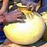The
Last Water Jar
American studio potter and teacher Jim Danisch takes us on a journey to
Thimi, Nepal, where he developed technology for glazed earthenware, trained
Nepali potters and helped to establish about twenty-four independent workshops.
New
Tendencies in Serbian Ceramics
Biljana Vukoti, Senior Custodian at the Museum of Applied Art in Belgrade,
takes us on a tour of contemporary Serbian ceramics and reviews an exhibition
of Serbian works being held at the Ceramic Art Gallery in Sydney, Australia.
 Bruce
Howdle's Wall Murals Bruce
Howdle's Wall Murals
In this article, Wisconsin based artist Bruce Howdle explains step-by-step
the procedure for creating his large-scale tile murals, some of which
are 60 feet (20 m) long.
Working
Big: Sculpting Industrial Clay Pipe
California artist Susannah Israel shares with us her experience creating
art objects from industrial pipes at the Mission Clay pipe factory in
Pittsburgh, Kansas in 2004.
Crossroads
The Seagrove International Ceramics Conference Crossroads will
be held in Seagrove, North Carolina, USA from June 5-10, 2005 and A
Celebration of the Seagrove Tradition from June 11-12, 2005.
A
Problem with Cobalt?
Studio potter and author of Safety in the Ceramics Studio Jeff
Zamek discusses the case of cobalt toxicity and its implications for the
potter.
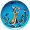Théodore
Deck and the Islamic Style
This article by art historian Frederica Todd Harlow delves into the artistic
and social background to famous French potter Théodore Deck's pioneer
pottery in the 19th century.
Raw
Glazing: A Traditional Approach
Australian studio potter Leonard Smith writes on the merits and difficulties
of the energy saving technique of raw-glazing, also known as 'once-firing'.
The
'Poor Potter' of Yorktown, Virginia
Who was the poor potter? Research reveals he was Yorktown entrepreneur
William Rogers, who was neither poor, nor a potter. He operated in Yorktown,
Virginia, USA in the early 1700s.
The
XV International Ceramic Symposium Panevežys 2004
Lithuania may be a small country with a mere 3.6 million inhabitants,
but it has a vibrant ceramics community. Patrick Mateescu fills us in
on the annual Panevežys Symposium, held June/July this year.
A
Postcard from... Nepal
Feats of Clay - The story of the Prajapati potter community of Thimi,
in Kathmandu Valley, Nepal. Working under adverse conditions, the potters
of Thimi make earthenware utensils for the surrounding community.
Museo
Richard-Ginori
The Richard-Ginori museum in Sesto-Fiorentino, Italy houses one of Europe's
great porcelain collections, with works ranging from the 18th century
to the present.
Artist's
Profile: Mamuro Taku
An essay by Kiyomi Noma on the work of Bizen
potter Mamoru Taku, who makes 'Sangiri' (Oxidised),'Hidasuki' (Fire pattered),
'Botamochi' (Rice-cake patterned) and 'Goma' (Ash covered) Bizen wares.
 Oil
Spot Glazes Demystified Oil
Spot Glazes Demystified
If you thought oilspot effects were hard to achieve, read this article
by North Carolina potter John Britt, who shows us just how easy it is.
Zillij
in Fez
The Moroccan city of Fez is filled with glittering crystals of art and
architecture. Amongst its brightest jewels are the geometric tile works
known as zillij.
Ancient
Greek Ceramics
Victor Bryant takes us back 3,500 years to survey the rich history of
Greek ceramics - one of the great legacies of the anncient world.
 Home
Cooking - A Case for Handmade Tableware Home
Cooking - A Case for Handmade Tableware
What does hand made functional ware bring into our lives that a cheap,
useful, factory-made bowl from Wal-Mart doesn't? Shannon Garson writes
on the merits of the hand made object.
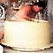Throwing
Classical Porcelain in Jingdezhen, China
Steve Brousseau fills us in on the history and processes of making porcelain
in Jingdezhen, China - the porcelain capital of the world.
The
Hungarian Connection
A selection of internationally known Hungarian artists demonstrates that
country's reputation for originality.
The
International Ceramics Studio
Located in Kecskemét, Hungary, the ICS offers an artist-in-residence
program, as well as a ceramics museum with an extensive collection of
world ceramics.
Art
Tiles: Aesthetics of Pleasure
Contemporary tile artist Philip Read writes on the topic of the art tile,
which has a long history of artistic and creative design.
A.I.R.
Vallauris (Artists in Residence)
The non-profit Association welcomes international artists from all over
the world to participate in an exciting artist-in-residence program.
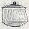Laura
Andreson Papers
Laura Andreson was a distinguished American studio potter and teacher.
Her personal papers are reproduced by kind permission of the Smithsonian
Archives of American Art.
Jingdezhen
2004
In 2004 the City of Jingdezhen, the 'Porcelain Capital of the World',
will host the world to celebrate 1000 years as a pottery production center.
Daphne
Corregan - Artist's Profile
American-born Daphne Corregan now calls France her home. Inspired by Picasso,
Miro and Matisse, she makes sculptural vessels that display a French sensibility.
 Steven Branfman's Raku FAQs
Steven Branfman's Raku FAQs
Answers to some common and some not so common questions regarding raku
by the author of Raku: A Practical Approach.
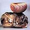Carol
Rossman Precision Raku
Jonathan Smith investigates the technical precision and ideas behind the
raku ceramics of Carol Rossman.
A Letter from Nigeria: A Saga of Synchronicity
Ron du Bois, Professor Emeritus of Art at Oklahoma State University describes
his experiences making a documentary on African ceramics.
 Titanium Dioxide
Titanium Dioxide
Edouard Bastarache fills us in on the toxicology of titanium dioxide,
a common ceramic ingredient. Available in French and English.
Clay
Modern
The Australian ceramics festival will take place in May 2004 in Gulgong,
near Sydney, Australia.
Ceramics
at the MET
Selected works from the Metropolitan Museum of Art, which has an extensive
collection of ceramics.
 The Slipcast Object
The Slipcast Object
Steamboat Springs Arts Council is seeking entries for The Slipcast
Object, an international exhibition, juried by Richard Notkin.
The
Pottery Path of Tokoname
Let yourself be transported to Japan to wander the streets of the prominent
pottery town of Tokoname!
Residencies
of the World
A review of some of the world's prominent ceramics residencies, from Kecskemét,
Hungary, to Banff, Canada.
 Danish
Ceramics - The Turn of the Century Danish
Ceramics - The Turn of the Century
Tove Jespersen continues her series on the history of Danish ceramics
with an article on the Kähler dynasty.
Where Have All The Tobys Gone?
Toby Jug expert Ron Earl discusses the merits of an underestimated antique
- the lovable Toby, who comes in all shapes and sizes.
The
Second Letter of Père d'Entrecolles
Ten years after his first letter on the secrets of Chinese porcelain,
Père d'Entrecolles added various corrections to his initial observations.
A
Postcard from Kanazawa, Japan
Interested in Japanese ceramics, the tea ceremony or Japanese culture
in general? 'Japanese Culture Seen in Kanazawa' has that and much more
to offer!
Salt & Soda
Glazing techniques, old and contemporary, similar, but different. Salt-glazing
has been around since the 15th century, soda-glazing since the 1970s.
Engobes
What is an engobe? A liquid clay slip applied to the surface of a clay
object, e.g. a pot. Article includes a recipe and color chart.
Westerwald
Prize - 2004
The German Westerwald ceramics prize has established itself as a major
European ceramics competition.
Book
Review: Getting to Know Your Toby Jug
Toby Jugs - ah, you've got to love 'em! In his book, Ron Earl tells more
about the beloved English curio.
Building
My Dream Kiln
Michelle Lowe of Desert Dragon Pottery describes building her 'Dream Kiln',
a down-draft, gas-fired car kiln.
The
Mud-Pie Dilemma by John Nance
John Nance's book follows the day to day struggles of American potter
Tom Coleman, who has eight weeks to make 100 pieces of work for a major
show.
Vessels,
Boxes & Baskets 2003 & 2 a Tea
Function+Art Gallery of Chicago Illinois announce two shows based on the
vessel and the teapot - Vessels, Boxes & Baskets 2003' & ' "2
a Tea.
The
True Tale of How One Man's Horse Enabled the Discovery of European Porcelain
How a horse's sticking hooves led to one of the most important European
discoveries of the 18th C., as told by Joseph Marryat.
The Lowe Features A Ceramic Continuum: Fifty Years Of The Archie Bray
Influence
Fifty Years of the Archie Bray Influence will be on exhibition at the
Lowe Art Museum, Miami, from September 20 through November 9, 2003.
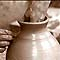Why
On Earth Do They Call It Throwing?
Dennis Krueger takes us on a linguistic exploration of some of the English
pottery terms we take for granted - 'throwing', 'wedging', 'slip' and
more.
Zelli Porcelain Award
The leading independent UK specialist in figurative porcelain announces
the second year of the Zelli Porcelain Award.
Flame, Smoke and Flying Ash
Australian potter Milton Moon draws inspiration from a visit to Japan,
when building a small anagama kiln in the back yard of his studio.
Sculpting
their Dreams - Ethiopian Artists in Israel
Sara Hakkert tells the story of the Jewish potters of Ethiopia, Beit Israel,
said to be one of the ten lost tribes of ancient Israelites.
Paperslip
By now, most people are familiar with the concept of paperclay, but not
many have heard of or tried out paperslip. Can paper be successfully added
to slip?
Raku
Firing on the Web
Helen Bates has scoured the World Wide Web to find the best Raku sites
on the Net! Find out what's happening from Sainte-Foy, Quebec to Perth,
Australia.
Surface
Tension and Glazing
What is surface tension? How does it effect glaze application? Smart.Conseil
fills us in on this important aspect of glaze technology. French &
English (15 August 2003)
In the Spotlight: ASU Ceramics Research Center
The Ceramics Research Center, houses and displays the Arizona State University
Art Museum’s extensive ceramic collection of more than 3,000 objects
Images
of Water Jugs
Mediterranean water jugs have featured prominently in fine art painting
throughout the ages. An exhibition being held in Argentona, near Barcelona,
Spain, examines this phenomenon.
How
to Make a Puzzle Mug
Delia Robinson and Jennifer Boyer team up to show us how to make these
delightful puzzle mugs and whistle cups.
The
Tile Stove
This article explores the history of the traditional energy-efficient
tile stove - common in central Europe, but little known in Anglo-saxon
countries such as the USA and Britain. English & German.
In
Their Cups
Delia Robinson tells us the charming story of the English Puzzle Mug,
which was the source of much merriment in English taverns in the days
of old.
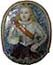Arms
of Light of Nevers
Olivier Estienne, author of ceramicscollector.com,
tells us about these typically French candle-holding wall plaques. French
& English.
The
Pottery Box
Wrapping in Japan is a very serious business and Japanese pottery boxes
are works of art in their own right. Report by Robert Yellin.
Ammonia
and Latex
Edouard Basytarche and Smart Conseil team up to tell us about the possible
dangers to potters using ammonia and latex. French & English
The
Origins of the Potter's Wheel
Potter and educator Victor Bryant tells the story of the potter's wheel,
which dates back to ancient times, probably originating in the Middle
East around 6000 BP.
Book
Review: With a Little Help From My Friends
Tom Coleman has gathered together an impressive crew of potters, who share
their experiences, knowledge and clay and glaze recipes in this manual
for the studio potter.
Potteries
and Potters around Horsens
Tove Jesperson continues her tour of famous Danish potteries with a look
at 20th C. ceramics manufacture at Horsens on the east coast of Jutland.
The
Sidney Myer Fund International Ceramics Award
The Sidney Myer Fund International Ceramics Award, held in Shepparton,
Australia, is a major international ceramics award held in the southern
hemisphere.
Porcelain
Paperclay
Gaye Stevens shares the results of a research project into the properties
and capabilities of making paperclay with porcelain.
How
to do a TeePee Firing
Judy Armstrong and Jan Barnes demonstrate how to do this outdoor firing
technique in this pictorial step-by-step article.
Interview
with Koie Ryoji
Master potter Koie Ryoji a "professor of clay and fire" who
has made some of Japan's most spectacular ceramic art ever seen. Interview
and story are by Yokoya Hideko.
Substitutions
for Raw Ceramic Materials
Edouard Bastarache's book is a 'tour de force' of substitutions of raw
ceramic materials, giving clear and easy directions on substitutions for
14 common materials.
1 2 3 4
5 6 7
8 Next |